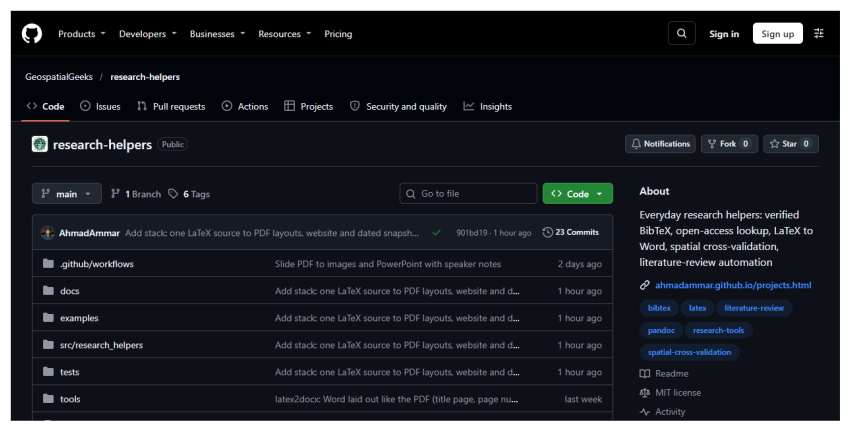
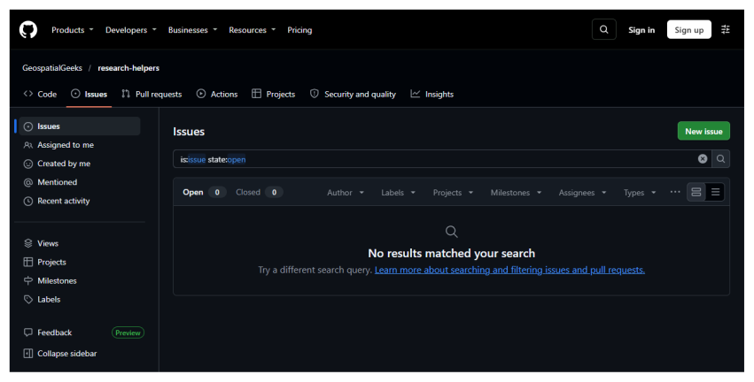

1. What contributing means¶
Open-source software is software whose code anyone may read and improve. Contributing means proposing a change to such a project. The change need not be code. Fixing a spelling mistake in the instructions counts, as does clearing up a confusing sentence, reporting a problem clearly, or adding a test. Beginners are often the best people to improve instructions, because they notice what the instructions assume.
You cannot damage a project by trying. Nothing you do reaches it until one of its maintainers, the people who look after it, reads your proposal and accepts it.
1.1 The whole journey¶
-
Find a project and a small thing to improve.
-
Make your own copy of the project on GitHub. This is a fork.
-
Download your copy to your computer.
-
Make a branch, which is a separate line of work.
-
Change the files, check them, and save a version.
-
Send the branch to your copy on GitHub.
-
Open a pull request, asking the maintainers to take your change.
-
Answer their comments until the change is accepted or closed.
1.2 The words you will meet¶
Git and GitHub have their own vocabulary. You do not need to memorise this table, so come back to it when a word looks unfamiliar.
| Word | Meaning |
|---|---|
| Repository | A project folder whose history Git keeps. Often shortened to repo. |
| Commit | One saved version of your files, with a short note saying what changed. |
| Stage (or add) | Choosing which changes go into the next commit. |
| Push | Sending your new commits from your computer to GitHub. |
| Pull | Bringing new commits from GitHub to your computer. |
| Clone | Downloading a repository, with its history, to your computer. |
| Branch | A separate line of work, which lets you try a change without disturbing the main version. |
main |
The usual name of the main branch. |
| Fork | Your own copy, on GitHub, of someone else’s repository. |
| Pull request | A request asking a project’s maintainers to take in your changes. |
1.3 The terminal, and how to read the commands here¶
A terminal is a window where you type instructions to your computer instead of clicking. It looks severe, but it only does what you type, and most commands in this guide are safe to repeat.
In VS Code, open the Terminal menu at the top of the window and choose New Terminal. A panel opens at the bottom of the window with a line that waits for you to type. That line is called the prompt. It usually ends in > or $ and shows the folder you are in.
When this guide shows a command, type everything on that line, then press Enter. Where a block shows a line beginning $, the $ stands for the prompt, so do not type it. The lines beneath it are what the computer prints back. Yours will match closely, although codes such as 1a2b3c4 will differ.
If a command prints something you did not expect, nothing is broken. Read the message, because it usually says what to do next. To stop a command that seems stuck, press Ctrl and C together.
2. Install the tools¶
You will install three free programs and create one account. Do these once and you will not need to repeat them.
2.1 Install VS Code, the program you will write in¶
VS Code is a free text editor from Microsoft. Go to code.visualstudio.com, press the large download button, open the file you receive, and accept the choices the installer offers. On Windows, leave the box marked Add to PATH ticked, because that lets the terminal find it.

The VS Code download page. The site changes its wording from time to time, but the download button stays near the top. If a cookie notice appears, either choice is fine.
When VS Code first opens it may offer to sign you in to an assistant or to choose a theme. You can close these offers, since nothing in this guide needs them.
2.2 Install Git, the program that keeps your history¶
Git records each saved version of your files, so you can always go back. Go to git-scm.com/downloads and choose your operating system.

The Git download page. Choose Windows, macOS or Linux, then follow the instructions on the page that opens.
On Windows, run the installer and press Next on every screen, as the suggested settings are fine. On a Mac, open the Terminal application and type git --version, and the system will offer to install it. On Linux, use your system’s package manager, for example sudo apt install git.
Close VS Code and open it again so that it notices Git. Then open a terminal and tell Git who you are. Git writes this name and email on every version you save, and they become public if you publish your work.
git config --global user.name "Your Name"
git config --global user.email "you@example.org"
git config --global init.defaultBranch main
These commands print nothing when they succeed. To check, type git --version, which should print a version number.
2.3 Install Python¶
Python is a programming language, and here it runs small scripts. Go to python.org/downloads and press the yellow download button.

The Python download page. The page recognises your operating system and offers the right version.
On Windows, tick Add python.exe to PATH on the first screen of the installer before you press Install Now. It is easy to miss, and without it the terminal cannot find Python. Close and reopen VS Code, then check that it worked:
python --version
This should print a version number such as Python 3.13.0. On a Mac or on Linux, the command may be python3 instead of python. Use whichever works, wherever this guide says python.
2.4 Create a GitHub account¶
GitHub is a website that stores copies of Git projects and lets other people see them. Git is the program on your computer, and GitHub is the place online.
Go to github.com/signup. Enter your email, choose a password and pick a username. Choose the username with care, because it appears in your web addresses and is awkward to change later. Your real name, or a close form of it, works well for professional use. GitHub will send a code to your email to confirm the account. The free plan is all you need, so if you are offered a paid plan or asked to fill in a survey, you can skip it.
The first time you send work to GitHub, a window will ask you to sign in through your browser. Accept it, and your computer will remember the permission.
3. Choose a project and something to change¶
3.1 Start with something you already use¶
The best first project is one you use, because you know where it confused you. If it is a tool for your field, you also understand its users. Look at its page on GitHub.

A project’s page on GitHub. The tabs at the top lead to its code, its issues and its pull requests. On the right are its description and licence. The Fork button sits above the file list.
3.2 Check that the project welcomes changes¶
Before you spend time, check four things on that page. The date beside the most recent files shows whether anyone has been active this year. A Licence on the right shows others are allowed to reuse the code, and open-source projects must have one. A file named CONTRIBUTING.md sets out the project’s rules, so read it first if there is one. And the Pull requests tab shows whether outsiders’ changes get answered.
3.3 Find something small¶
Press the Issues tab, which lists known problems and requests. Many projects label easy ones good first issue.

The Issues tab. This project has none open, which is common for small ones. In that case, improve something you noticed yourself.
If you plan a large change, first write an issue describing it and wait for a reply, so that you do not spend days on something the maintainers would not accept. For a spelling fix, you can go straight ahead. If you take an existing issue, leave a comment saying you are working on it, so that nobody duplicates the work.
A useful first change is one a reader could check in a minute. Fix a broken link, correct a mistaken command in the instructions, or add a missing step you had to work out yourself.
4. Make the change¶
The examples below use a made-up project called their-project. Its README says CVS where it means CSV. The text printed under each command came from really running that command, with the addresses replaced by sample ones.
4.1 Fork the project¶
On the project’s GitHub page, press Fork near the top right, then press Create fork on the page that follows. You now have your own copy at github.com/your-name/their-project. It is yours, so you can do anything to it without affecting the original.
4.2 Download your copy¶
On your fork’s page, press the green Code button and copy the HTTPS address. Then, in a VS Code terminal, clone it, using your own address:
$ git clone https://github.com/your-name/their-project.git
Cloning into 'their-project'...
done.
Move into the folder and open it:
cd their-project
code .
4.3 Tell Git about the original project¶
Your computer knows about your fork, which Git calls origin. It also needs to know about the original, which by custom is called upstream, so that you can collect new work from it later. Use the original project’s address here:
$ git remote add upstream https://github.com/their-name/their-project.git
$ git remote -v
origin https://github.com/your-name/their-project.git (fetch)
origin https://github.com/your-name/their-project.git (push)
upstream https://github.com/their-name/their-project.git (fetch)
upstream https://github.com/their-name/their-project.git (push)
4.4 Make a branch¶
Never work directly on main. A branch keeps this one change apart, so you can run several proposals at once and keep main matching the original. Give it a name that says what it does:
$ git switch -c fix-readme-spelling
Switched to a new branch 'fix-readme-spelling'
4.5 Change the file and check it¶
Open the file in VS Code, change it and save it. Then ask Git to show you exactly what is different. Lines starting with - were removed and lines starting with + were added. Check that nothing else has changed by accident, such as stray spaces.
$ git diff
diff --git a/README.md b/README.md
index 1a2b3c4..5d6e7f8 100644
--- a/README.md
+++ b/README.md
@@ -1,3 +1,3 @@
# Their project
-This tool reads a CVS file.
+This tool reads a CSV file.
If you changed code, run the project’s tests. CONTRIBUTING.md or the README normally says how. Many Python projects use the commands below, where the first makes an isolated workspace, the second installs the project into it, and the third runs its tests:
python -m venv .venv
.venv\Scripts\activate
pip install -e .
pip install pytest
pytest
The second line is for Windows. On a Mac or on Linux, it is source .venv/bin/activate.
If you fixed a mistake in code, add a test too, as maintainers look for one. A test is a small piece of code that checks a known answer, and it fails if someone breaks that behaviour later. Here is one for a function that works out the area of a circle:
from areas import circle_area
def test_circle_area_of_radius_two():
assert abs(circle_area(2) - 12.566) < 0.01
4.6 Save a version¶
Choose only the files you meant to change, then write a note that says what the change does:
$ git add README.md
$ git commit -m "Fix spelling of CSV in the README"
[fix-readme-spelling 1b1be51] Fix spelling of CSV in the README
1 file changed, 1 insertion(+), 1 deletion(-)
4.7 Send it to your fork¶
$ git push -u origin fix-readme-spelling
branch 'fix-readme-spelling' set up to track 'origin/fix-readme-spelling'.
To https://github.com/your-name/their-project.git
* [new branch] fix-readme-spelling -> fix-readme-spelling
Git prints an address for opening a pull request, which you can use in the next chapter.
5. Propose it and follow it through¶
5.1 Open the pull request¶
Go to your fork on GitHub. A yellow band usually shows your recent branch with a green button, Compare & pull request. Press it. If there is no band, press the Pull requests tab, then New pull request, and choose your branch.
Check the top line of the form. It shows that your branch will go into the original project’s main. Then write a title and a description. Say what you changed, why, and how you checked it. Here is a good example:
Title: Fix spelling of CSV in the README
The README said the tool reads a "CVS" file, but the code reads CSV.
I changed that one word. No code changed, so there are no tests to run.
If this settles an issue, add a line saying Fixes #12, using the issue’s number. GitHub will then close that issue when your change is accepted. Press Create pull request.
5.2 What happens next¶
Automatic checks may start and show a yellow dot, then a green tick or a red cross. Press Details beside a red cross to read why it failed. A maintainer will read your change when they have time, and that can take days or weeks because many of them are volunteers. If you hear nothing for two weeks, one polite comment asking if they need anything else is reasonable.
5.3 Answering comments¶
Requests for changes are normal and are not a judgement of you. Experienced contributors receive them all the time. To update your proposal, change the files on the same branch and push again. The pull request updates itself, so you never need to open a new one.
git add README.md
git commit -m "Reword after review"
git push
If a maintainer declines, thank them and move on. The reason is often about the project’s direction, and your fork still has your work.
5.4 After it is accepted¶
Your name now appears in the project’s history. Tidy up by bringing the new work into your copy, so your next change starts from the latest version:
$ git switch main
Your branch is up to date with 'origin/main'.
Switched to branch 'main'
$ git fetch upstream
From https://github.com/their-name/their-project
* [new branch] main -> upstream/main
$ git merge upstream/main
Updating 1a2b3c4..5d6e7f8
Fast-forward
CHANGES.md | 1 +
1 file changed, 1 insertion(+)
create mode 100644 CHANGES.md
$ git push origin main
To https://github.com/your-name/their-project.git
1a2b3c4..5d6e7f8 main -> main
You can then delete the old branch. GitHub offers a button for this on the pull request’s page, and locally you type git branch -d fix-readme-spelling.
5.5 Being a good contributor¶
Keep each pull request to one change, which makes it quick to review. Follow the style of the code around you, even where you would choose differently. Read CONTRIBUTING.md and any code of conduct first. And if you used an automatic tool to write any of it, check the project’s rules on that, make sure you understand every line you submit, and be open about it when asked.
5.6 When something goes wrong¶
| What you see | What to do |
|---|---|
| Permission denied when pushing | You are probably pushing to the original rather than your fork. Run git remote -v, and check that origin shows your username. |
You committed on main by accident |
Run git switch -c new-branch-name, which carries your commit onto a new branch. |
| This branch has conflicts | Someone changed the same lines. Run git fetch upstream, then git merge upstream/main. Open the files Git names, keep the right text, delete the marker lines, then add, commit and push. |
| A check fails for something you did not touch | Say so in a comment, as it may already be broken for everyone. |
| Please tell me who you are | Run the git config lines from the install chapter, then repeat the commit. |